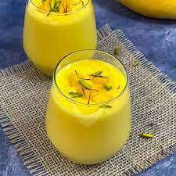

Mango lassi is very rich and luxurious drink with yogurt and mangoes. It is the perfect summer drink when served chilled.
Combine mangos, yogurt, milk, cream, confectioners' sugar, and cardamom in a blender; blend until smooth and frothy. Pour into glasses and serve immediately.
Back to Recipes